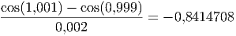
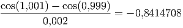
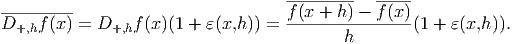
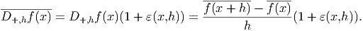
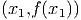
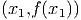

um conjunto de
um conjunto de  funções e
funções e  um conjunto
de
um conjunto
de  pontos. Procuram-se os coeficientes
pontos. Procuram-se os coeficientes  tais que a função dada
por
tais que a função dada
por
Seja um conjunto de funções e um conjunto
de pontos. Procuram-se os coeficientes tais que a função dada
por

![n
R = ∑ [f(x ) - y]2
j=1 i i](main3172x.png)
 , temos
, temos

Este problema é equivalente a resolver pelo métodos dos mínimos quadrados o seguinte sistema linear:

=======
id="x72-1100007.3">Ajuste polinomial
>>>>>>> 62bea6a0d0a1d3eca740d93a452697554da972de
O ajuste polinomial é o caso particular do ajuste linear para função.  e
e  tais que a função
tais que a função
 melhor se ajusta aos pontos da tabela. Afim de usar o critério
dos mínimos quadrados, escrevemos o problema na forma matricial dada
por:
melhor se ajusta aos pontos da tabela. Afim de usar o critério
dos mínimos quadrados, escrevemos o problema na forma matricial dada
por:

Multiplicamos agora ambos os lados pela transposta:
 |
o que fornece:
 ões
polinomiais, isto é, funções do tipo
=======
=======
href="mainli12.html#mainse49.html" >Índice
ões
polinomiais, isto é, funções do tipo
=======
=======
href="mainli12.html#mainse49.html" >ÍndiceEventualmente, problemas de ajuste de curvas podem recair num
sistema não linear. Por exemplo, para ajustar função  ao
conjunto de pontos
ao
conjunto de pontos  ,
,  e
e  , temos que minimizar o
resíduo2
<<<<<<< HEAD
>>>>>>> 8ffe51d4bbc8f1e500cc9c435f05cb1c6f0ffef3
=======
>>>>>>> 2ce5bba22e77a9b0d17e57fb0d2efc8029204145
, temos que minimizar o
resíduo2
<<<<<<< HEAD
>>>>>>> 8ffe51d4bbc8f1e500cc9c435f05cb1c6f0ffef3
=======
>>>>>>> 2ce5bba22e77a9b0d17e57fb0d2efc8029204145


 e . Esse sistema pode ser resolvido pelo método
de Newton-Raphson, o que pode se tornar custoso, ou mesmo inviável
quando não dispomos de uma boa aproximação da solução para inicializar o
método.
e . Esse sistema pode ser resolvido pelo método
de Newton-Raphson, o que pode se tornar custoso, ou mesmo inviável
quando não dispomos de uma boa aproximação da solução para inicializar o
método.
Felizmente, algumas famílias de curvas admitem uma transformação que nos
leva a um problema linear. No caso da curva  , observe que
, observe que
 . Assim, em vez de ajustar a curva original
. Assim, em vez de ajustar a curva original  a tabela
de pontos, ajustamos a curva submetida a transformação logarítmica
a tabela
de pontos, ajustamos a curva submetida a transformação logarítmica

 ,
,  e resolvemos o sistema
linear
e resolvemos o sistema
linear

A solução desse sistema é  e
e 
A tabela abaixo mostra os valores dados e os valores ajustados:
 |  |  |  |
 |  |  |  |
 |  |  |  |
 |  |  |  |
 |  |  |  |
 |  |  |  |

======= src="main3259x.png" alt="⌊ n n ⌋ ⌊ n ⌋ n ∑ xj ⋅⋅⋅ ∑ xp ⌊ ⌋ ∑ yj || j=1 j=1 j || | a1 | || j=1 || || n∑ n∑ 2 ∑n p+1|| || || || ∑n || ||j=1xj j=1 xj j=1 xj || || a2 || || j=1 xjyj|| || .. .. .. || || .. || = || .. || || . . . || |⌈ . |⌉ || . || |⌈ n∑ p n∑ p+1 n∑ 2p|⌉ ap+1 |⌈ n∑ p |⌉ j=1x j j=1 xj ⋅⋅⋅ j=1 xj j=1 xjyj " class="math-display" >
>>>>>>> 62bea6a0d0a1d3eca740d93a452697554da972de

E 7.3.1. Encontrar a parábola  que melhor aproxima o seguinte
conjunto de dados:
que melhor aproxima o seguinte
conjunto de dados:
 |  |
 |  |
 |  |
 |  |
 |  |
 |  |
e complete a tabela:
 |  |  |  |
=======
src="main3273x.png" alt="xi " class="math" >  |  |  |
>>>>>>> 62bea6a0d0a1d3eca740d93a452697554da972de
 |  | |||||
 |  | |||||
 |  | |||||
 |  | |||||
 |  | |||||
Resposta.  =======
src="main3287x.png" alt="y =-0,0407898x2+2,6613293x+1,9364598 " class="math" >
>>>>>>> 62bea6a0d0a1d3eca740d93a452697554da972de
=======
src="main3287x.png" alt="y =-0,0407898x2+2,6613293x+1,9364598 " class="math" >
>>>>>>> 62bea6a0d0a1d3eca740d93a452697554da972de
 |

 que melhor ajusta
os pontos
que melhor ajusta
os pontos  ,
,  e
e  .
.
Temos

 e
e  . Portanto,
.
>>>>>>> 8ffe51d4bbc8f1e500cc9c435f05cb1c6f0ffef3
=======
src="main3394x.png" alt="A = e0,217442 = 1,24289 " class="math" >.
>>>>>>> 2f43bff4df7198ad5fd8ebe602c2f00c0d1ecf01
=======
src="main3394x.png" alt="A = e0,217442 = 1,24289 " class="math" >.
>>>>>>> 2ce5bba22e77a9b0d17e57fb0d2efc8029204145
. Portanto,
.
>>>>>>> 8ffe51d4bbc8f1e500cc9c435f05cb1c6f0ffef3
=======
src="main3394x.png" alt="A = e0,217442 = 1,24289 " class="math" >.
>>>>>>> 2f43bff4df7198ad5fd8ebe602c2f00c0d1ecf01
=======
src="main3394x.png" alt="A = e0,217442 = 1,24289 " class="math" >.
>>>>>>> 2ce5bba22e77a9b0d17e57fb0d2efc8029204145
Observação 7.3.1. Os coeficientes obtidos a partir dessa linearização são
aproximados, ou seja, são diferentes daqueles obtidos quando aplicamos
mínimos quadrados não linear. Observe que estamos minimizando

 que
=======
src="main3291x.png" alt="f(x) = a + b sin(2πx ) + ccos(2πx ) " class="math" > que
>>>>>>> 62bea6a0d0a1d3eca740d93a452697554da972de
melhor aproxima os valores dados.
que
=======
src="main3291x.png" alt="f(x) = a + b sin(2πx ) + ccos(2πx ) " class="math" > que
>>>>>>> 62bea6a0d0a1d3eca740d93a452697554da972de
melhor aproxima os valores dados.
![∑ [y − f(x )]2
i i i](main3396x.png) . No exemplo resolvido, a
solução do sistema não linear original seria e
>>>>>>> 8ffe51d4bbc8f1e500cc9c435f05cb1c6f0ffef3
=======
src="main3397x.png" alt="A = 1,19789 " class="math" > e
. No exemplo resolvido, a
solução do sistema não linear original seria e
>>>>>>> 8ffe51d4bbc8f1e500cc9c435f05cb1c6f0ffef3
=======
src="main3397x.png" alt="A = 1,19789 " class="math" > e  >>>>>>> 2f43bff4df7198ad5fd8ebe602c2f00c0d1ecf01
=======
src="main3397x.png" alt="A = 1,19789 " class="math" > e
>>>>>>> 2ce5bba22e77a9b0d17e57fb0d2efc8029204145
>>>>>>> 2f43bff4df7198ad5fd8ebe602c2f00c0d1ecf01
=======
src="main3397x.png" alt="A = 1,19789 " class="math" > e
>>>>>>> 2ce5bba22e77a9b0d17e57fb0d2efc8029204145
Observação 7.3.2. Mesmo quando se deseja resolver o sistema não linear, a solução do problema linearizado pode ser usada para construir condições iniciais.
A próxima tabela apresenta algumas curvas e transformações que linearizam o problema de ajuste.
 ,
,  ,
,  e
e  ,
,  , >>>>>> 62bea6a0d0a1d3eca740d93a452697554da972de
class="ec-lmr-6">,
=======
>>>>>>> 8ffe51d4bbc8f1e500cc9c435f05cb1c6f0ffef3
=======
>>>>>>> 2ce5bba22e77a9b0d17e57fb0d2efc8029204145
, >>>>>> 62bea6a0d0a1d3eca740d93a452697554da972de
class="ec-lmr-6">,
=======
>>>>>>> 8ffe51d4bbc8f1e500cc9c435f05cb1c6f0ffef3
=======
>>>>>>> 2ce5bba22e77a9b0d17e57fb0d2efc8029204145
![|------------------|---------------|--------------------------|
|------curva-------|transforma-ção-|---problema-linearizado----|
| bx | | |
|----y-=--ae-------|---y˜=--ln-y----|------y˜=--ln-a-+-bx-------|
| b | | |
|-----y-=-ax-------|---y˜=--ln-y----|-----˜y-=-ln-a +-bln-x------|
| y = axbecx | y˜= ln y | ˜y = ln a + bln x + cx |
|------------------|---------------|--------------------------|
| y = ae(b+cx)2 | y˜= ln y |˜y = ln a + b2 + bcx + c2x2|
|------------------|---------------|--------------------------|
| y = ba+x | y˜= 1y | ˜y = ba + 1ax |
|------------------|---------------|--------------------------|
|y = A cos(ωx + ϕ) | − |y = acos(ωx ) − b sin (ωx )|
| | | |
|---ω-conhecido----|----------------a-=-A-cos(ϕ),-b =-A-sin(ϕ-)-
| |](main3399x.png)
Solução. Usando o
fato que  , onde 
e
, onde 
e  ,
, ![z = [ a b ]T](main3406x.png) é solução do problema
é solução do problema


 e
e  e obtemos o seguinte sistema:
e obtemos o seguinte sistema:


 ,
,  e
e

 também é positivo,
também é positivo,  é um ângulo do primeiro
quadrante:
é um ângulo do primeiro
quadrante:

 . Observe que nesse exemplo
a solução do problema linear é a mesma do problema não linear.
. Observe que nesse exemplo
a solução do problema linear é a mesma do problema não linear. 
Exemplo 7.3.3. Encontre a função  da forma
da forma  que
ajusta a tabela de pontos
que
ajusta a tabela de pontos

Solução. Usando o fato que  ,
, ![b 1 T
z = [ a a ]](main3425x.png) é solução
do problema
é solução
do problema


 e, então,
e, então,  e ,
ou seja,
e ,
ou seja,  .
. 
 da forma
da forma
 que ajusta a tabela de pontos
que ajusta a tabela de pontos